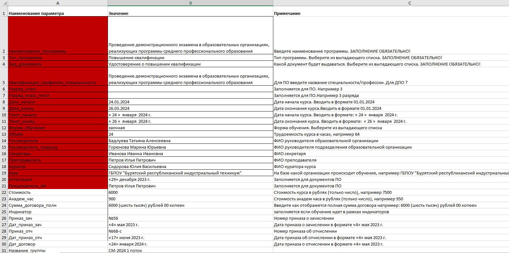
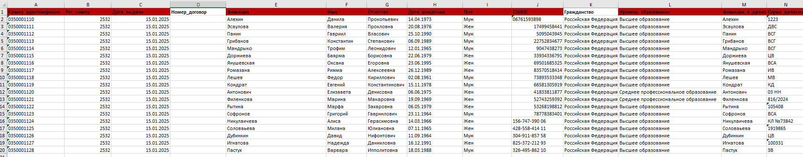
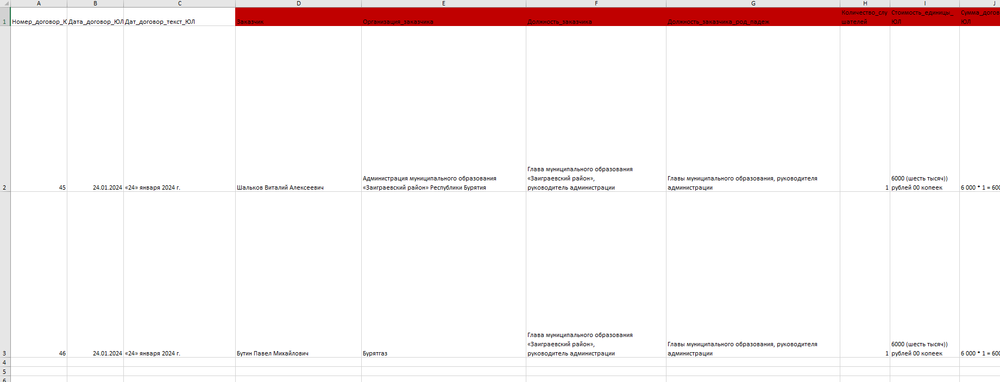
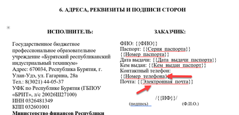
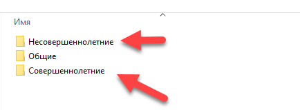

Создание сопроводительной документации ДПО и ПО
В прилагаемом шаблоне xlsx (Excel или его аналоги) заполняется 3 листа:
Лист Описание содержит информацию о типе курса, названии, квалификации, разряде, преподавателе, кураторе, базе и т.п. информация которая является общей для всей документации относящейся к данному курсу.
В колонку Наименование параметра записываются названия меток на место которых в создаваемой документации будут подставлятся данные.
В колонку Значение записывается данные которые будут подставляться на место меток указанных в колонке Наименование параметра.
В колонке Примечание записаны пояснения к тому как заполнять колонку Значение.
Можно добавлять свои параметры.
Лист Данные физлиц содержит персональную информацию по каждому слушателю: ФИО, СНИЛС, паспортные данные, данные по диплому и т.п.
Можно добавлять свои колонки.
Лист Данные юрлиц содержит персональную информацию по юридическим лицам которая необходима в основном для создания договоров. Заполнение необязательно
Можно добавлять свои колонки.

После этого создаются шаблоны docx (Word или его аналоги) тех документов которые вы хотите создавать на основе заполненной электронной таблицы.
- Открыть существующий или создать новый документ в формате docx.
- Прописать в нужные вам места в двойных фигурных скобках названия колонок из таблицы с данными курса.
- Сохранить в нужную папку.
Программа при создании документации повторяет структуру папок с шаблонами.
Структурирование шаблонов по папкам позволит уменьшить время на организацию создаваемых документов, поскольку структура папок, содержащих шаблоны будет полностью скопирована в итоговую папку. То есть если у вас соответствующие шаблоны лежат в папках Удостоверения и Договора то при генерации программа создаст такие же папки в которых будут находиться удостоверения и договора соответственно.
Автоматическое разделение документов совершеннолетних и несовершеннолетних
Шаблоны таких документов как согласия отличаются если слушатель является несовершеннолетним (в таком случае нужно указывать данные законных представителей слушателя). Чтобы не делать вручную по отдельности такие документы, программа автоматически произведет деление создаваемых документов по признаку совершеннолетия на выбранную дату, если вы поместите шаблоны необходимых документов в папки с названием Несовершеннолетние и Совершеннолетние. То есть для всех кому не исполнилось 18 лет на выбранную дату или на дату запуска программы будет использован шаблон, который находится в папке Несовершеннолетние, а для тех кому исполнилось 18 будет использован шаблон из папки Совершеннолетние.
Создание однотипных документов docx (Word и его аналоги)
Для примера у вас есть список группы из 100 обучающихся на курсе и вам нужно на каждого из них сделать справку, договор, согласие и т.п. при этом разделив создаваемые документы по папкам (чаще всего такое пригодится при создании pdf версий удостоверений и свидетельств для рассылки). Документы отличается только паспортными данными и реквизитами, и чтобы вам не пришлось 100 раз создавать документ на каждого, вы можете использовать эту программу. Вам нужно будет только указать таблицу с используемыми данными формата Excel и создать шаблон документа в Word указав в этом шаблоне в двойных фигурных скобках {{}} названия колонок из файла с расширением xlsx. После чего программа, беря данные из таблицы и подставляя эти данные в {{}} в шаблоне, создаст вам столько документов сколько строк есть в таблице с сохранением форматирования шаблона.
Можно создавать pdf версии создаваемых документов, можно создавать объединенные файлы (т.е. вместо 100 отдельных документов у вас будет один файл в котором будет находиться 100 документов).
Также можно задавать структуру папок в которых будут сохраняться документы. Достаточно просто указать не более трех порядковых номеров колонок по которым вы хотите рассортировать документы
Очистка списка от ошибок
С ее помощью вы можете провести первичную обработку списка xlsx. Удалить лишние пробельные символы в начале и конце каждой ячейки в таблице, а также между словами.
Для колонок содержащих в названии слова Фамилия,Имя,Отчество, ФИО, сделать так чтобы каждое слово в этих колонках начиналось с большой буквы.
Для колонок название которых содержит слово дата найти неверно заполненные ячейки.
Для колонок название которых содержит слово снилс привести к данные к стандартному виду ХХХ-ХХХ-ХХХ ХХ и найти неверно заполненные ячейки (где больше или меньше цифр чем надо).
Для колонок название которых содержит слово инн привести к формату из 12 цифр (ИНН физического лица) удалив все символы кроме цифр и найти неверно заполненные ячейки (где больше или меньше цифр чем надо).
Для колонок название которых содержит словосочетания (в любом порядке): серия паспорт, номер паспорт, код подразд привести их к стандартному виду и найти неверно заполненные ячейки (где больше или меньше цифр чем надо)..
Для колонок название которых содержит слово телефон удалить все нечисловые символы.
Для колонок названия которых содержат в себе слова электрон почта,e-mail удалить все пробельные символы.